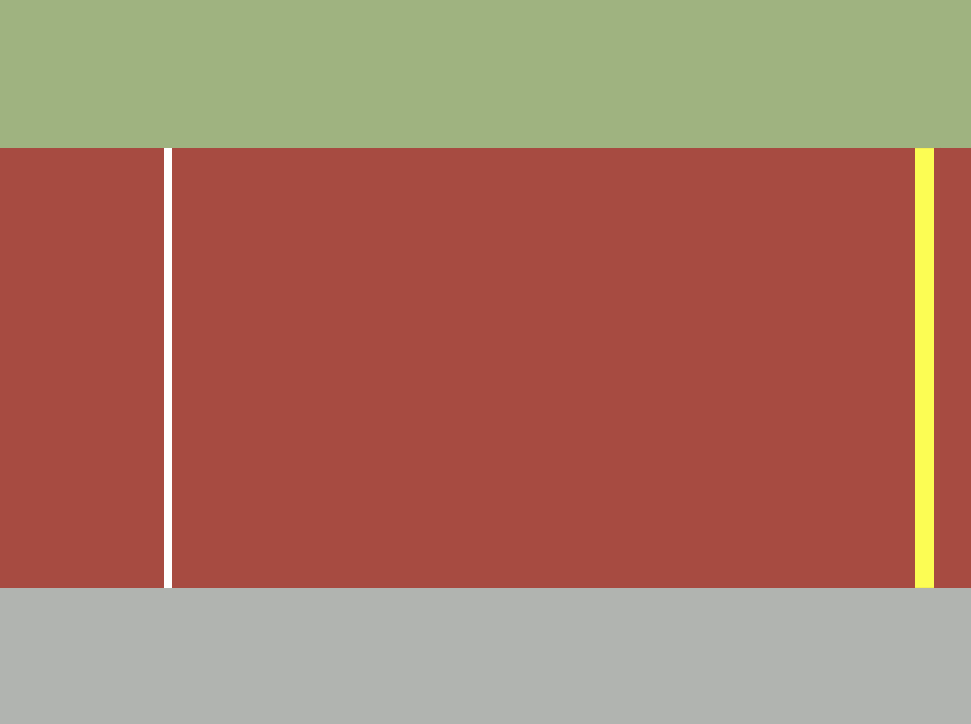
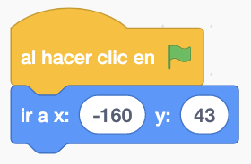
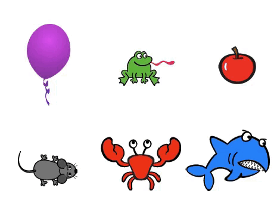

Cogeremos seis personajes de la biblioteca de objetos de Scratch.
No es necesario ningún escenario.
El juego consiste en que tendremos 6 personaje y al pasar por encima de ellos con el ratón, cada uno tendrá
un efecto gráfico distinto. Cuando dejemos de estar encima de cada personaje, desaparecerá el efecto.
Lo primero que haremos será colocar los seis objetos en la pantalla de la siguiente forma.

Ahora, para cada uno de los objetos, tendremos que posicionar el objeto en su posición.
Después tendremos que ver si el puntero del ratón está tocando el objeto. Si lo toca aplicaremos un efecto
gráfico distinto a cada uno de los objetos y si no, dejaeremos de aplicar dicho efecto.
Pondremos un bloque de "Número Aleatorio" para que cada vez fuera distinto el resultado del efecto gráfico.
Para poder ver este efecto con el número aleatorio pondremos un bloque "Esperar" para que veamos la
diferencia en cada efecto con valores aleatorios

Podemos aplicar cualquier efecto de los siete que existen.
Y el juego quedaría así.

Para ver el juego terminado pulsa
aquí.
Para descargarte el juego terminado pulsa
aquí.